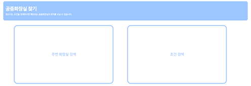
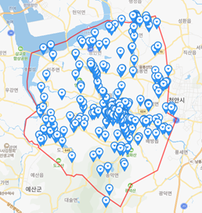
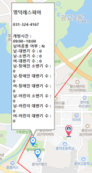
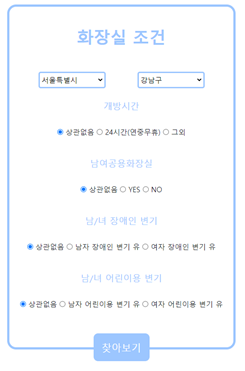

공공데이터를 활용한 전국 공중 화장실 위치 및 정보 제공 서비스
Public toilet information service
1.프로젝트 소개
- 주요기능
- 현재 사용자가 위치한 지역의 화장실 중 가장 가까운 화장실의 정보 제공
- 사용자 희망 조건을 충족하는 화장실 정보 제공
- 주제 선정 이유
- 사용할 수 있는 주변의 화장실을 급하게 찾았던 경험
- 사용자 희망 조건을 충족하는 화장실 정보 제공
2. 개발환경
- Client
- Server
- Database
- Map API
3. 데이터 수집 및 출처
4. 기능
- Main page

- 사용자 주변 화장실 검색 기능
- 조건설정을 통한 화장실 검색 기능
- 각 버튼 클릭 시 해당하는 화면 출력
- 사용자 주변 화장실 검색 기능


- 사용자가 현재 위치한 지역의 화장실 지도 출력
- 사용자의 현재 위치 지도상에 마커로 표시 (붉은색 마커)
- 사용자가 현재 위치한 지역의 화장실 위치 지도상에 마커로 표시 (푸른색 마커)
- 사용자가 현재 위치한 지역의 경계선 출력
- 사용자와 가낭 가까운 화장실의 정보 자동 출력
- 화장실 조건 검색 기능

- 검색 희망 지역 선택 (전국)
- 개방시간 조건 설정
- 남여공용화장실 여부
- 남/녀 장애인 변기 유무
- 남/녀 어린이용 변기 유무
- 위 조건에 해당하는 화장실 지도 출력
- 조건 선택 후 찾아보기 버튼 클릭 시 화장실 지도 출력